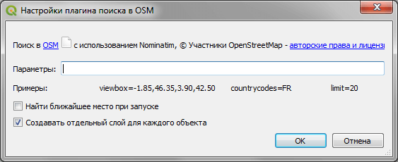
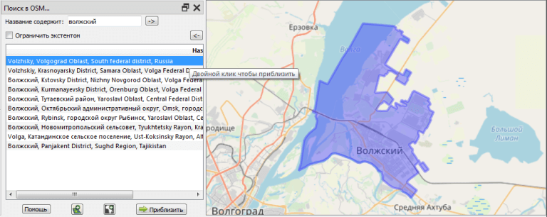

Упростить определение местоположения объектов (города, водные объекты и пр.) с использованием инструмента Nominatim, предоставленного компанией Mapquest.
Отдельные параметры API Nominatim могут быть заданы парами ключ=значение: "option1=value option2=value".
Так, например, ограничение поиска в определенной области задается параметром viewbox: "viewbox=-1.85,46.35,3.90,42.50".
С другими параметрами можно ознакомиться по ссылке.
Активируйте панель плагина.
Введите название объекта поиска или его чать. Подтвердите ввод.
Поиск может быть ограничен текущим экстентом.
Выбор элемента из списка отобразит соответствующую геометрию на карте.
Двойной клик на элементе из списка, а также кнопка "Приблизить", устанавливают охват по геометрии.
Вы также можете создать векторный слой с соответствующим типом геометрии из выбранного объекта. Кроме того, для полигонов можно создать слой маски.